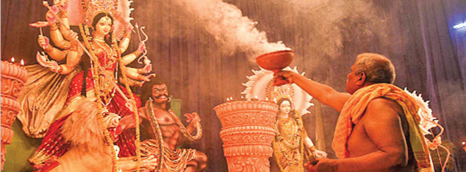
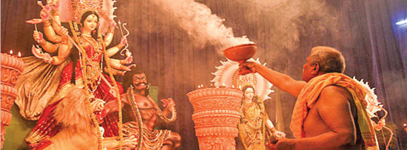
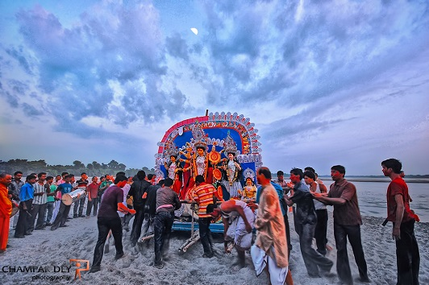
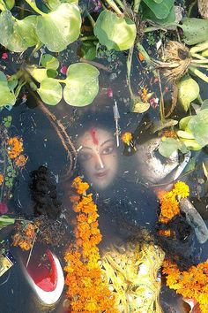

| Home Literature Theatre & Cinema Music & Dance Festivals Cuisine Architecture Handicrafts |
West Bengal celebrates many holidays and festivals. The Bengali proverb “Baro Mase Tero Parbon” (“Thirteen festivals in twelve months”) indicates the abundant of festivity in the state. In West Bengal throughout the year many festivals are celebrated. Durga Puja is solemnized as perhaps the most significant of all celebrations in West Bengal. Here is a list of the main festivals of West Bengal.
Durga Puja is the biggest, most popular and widely celebrated festival in West Bengal. The five-day-long colourful Hindu festival includes intense celebration across the state. Pandals are erected in various cities, towns, and villages throughout West Bengal. The city of Kolkata undergoes a transformation during Durga Puja. It is decked up in lighting decorations and thousands of colourful pandals are set up where effigies of the goddess Durga and her four children are displayed and worshipped. The idols of the goddess are brought in from Kumortuli, where idol-makers work throughout the year fashioning clay-models of the goddess. Since independence in 1947, Durga Puja has slowly changed into more of a glamorous carnival than a religious festival. Today people of diverse religious and ethnic backgrounds partake in the festivities. On Vijayadashami, the last day of the festival, the effigies are paraded through the streets with riotous pageantry before being dumped into the rivers.
Durga Puja (pronounced [dʊrɡa puːdʒa]), also called Durgotsava , is an annual Hindu festival originating in the Indian subcontinent which reveres and pays homage to the Hindu goddess, Durga.It is particularly popular and traditionally celebrated in the Indian states of West Bengal, Assam, Odisha, Tripura and the country of Bangladesh, and the diaspora from this region, and also in Mithilanchal regions of Bihar and Nepal. The festival is observed in the Indian calendar month of Ashwin, which corresponds to the months of September–October in the Gregorian calendar, and is a ten-day festival,of which the last five are of significance.The puja is performed in homes and in the public, the latter featuring temporary stage and structural decorations (known as pandals). The festival is also marked by scripture recitations, performance arts, revelry, gift giving, family visits, feasting, and public processions. Durga puja is an important festival in the Shaktism tradition of Hinduism.
As per Hindu scriptures, the festival marks the victory of goddess Durga in her battle against the shape-shifting asura, Mahishasura. Thus, the festival epitomises the victory of good over evil, though it is also in part a harvest festival celebrating the goddess as the motherly power behind all of life and creation.Durga puja coincides with Navaratri and Dussehra celebrations observed by other traditions of Hinduism, in which the Ram lila dance-drama is enacted, celebrating the victory of Rama against Ravana, and effigies of Ravana are burnt.
Over the years, Durga puja has become an inseparable part of Indian culture with innumerable people celebrating this festival in their own unique way while pertaining to tradition.
Durga Puja, major festival of Hinduism, traditionally held for 10 days in the month of Ashvina (September–October), the seventh month of the Hindu calendar, and particularly celebrated in Bengal, Assam, and other eastern Indian states. Durga Puja celebrates the victory of the goddess Durga over the demon king Mahishasura. It begins on the same day as Navratri, a nine-night festival celebrating the divine feminine.
 


Durga Puja’s first day is Mahalaya, which heralds the advent of the goddess. Celebrations and worship begin on Sasthi, the sixth day. During the following three days, the goddess is worshipped in her various forms as Durga, Lakshmi, and Sarasvati. The celebrations end with Vijaya Dashami (“Tenth Day of Victory” ), when, amid loud chants and drumbeats, idols are carried in huge processions to local rivers, where they are immersed. That custom is symbolic of the departure of the deity to her home and to her husband, Shiva, in the Himalayas. Images of the goddess—astride a lion, attacking the demon king Mahishasura—are placed at various pandals (elaborately decorated bamboo structures and galleries) and temples.
 